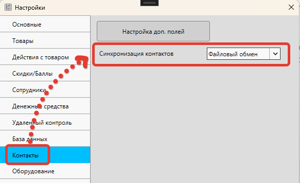

GBS.Market позволяет автоматически синхронизировать информацию о контактах (покупателях) между торговыми точками. Например, такая синхронизация может быть полезна для обмена информацией о накопленных баллах или суммы задолженности. Т.е. покупатель может накопить баллы в одной торговой точке, но потратить в другой.
Настройка обмена
Для того чтобы обмен информацией о покупателях между торговыми точками (магазинами) работал, необходимо выполнить настройку синхронизации.
Информация
Если облачная синхронизация между торговыми точками уже настроена, например, вы делаете перемещение товаров между магазинами или каждая торговая точка выгружает данные для "дом/офис", то этот шаг можно пропустить.
Установка "облака"
Для обмена информацией о контактах (покупателях) используется "облако", например, Яндекс.Диск.
Установку "облака" необходимы выполнить в каждой торговой точке, которая будет участвовать в синхронизации.
Важно
Необходимо выполнять вход в "облако" под одной учетной записью в каждой торговой точке, либо использовать общие папки для разных учетных записей, чтобы каждая из торговых точек имела доступ к папке обмена данными.
Полезные материалы
Настройка выгрузки данных
После того как облачный сервис будет установлен, необходимо настроить выгрузку данных на компьютерах тех торговых точек, которые участвуют в обмене.
Подробная статья
Включение синхронизации контактов
На компьютерах, которые должны участвовать в обмене контактами, необходимо включить опцию "Синхронизировать информацию о контактах". Найти ее можно следующим образом: на главной форме в меню нажмите Файл – Настройки – Контакты.
Важно
Выгрузка информации о контактах происходит в 5 и 35 минут каждого часа. Необходимо дождаться выгрузки перед тем, как проверять работоспособность синхронизации.
Настройка префиксов дисконтных карт
Если вы предоставляете покупателям дисконтные карты, необходимо во всех торговых точках, использовать одно значение для префикса дисконтных карт.
Связанные материалы
После всех настроек сохраните параметры.
Как работает синхронизация
Важно понимать, что синхронизация не загружается все контакты из других торговых точек, но позволяет искать покупателей и видеть общую сумму покупок, баллов и задолженности.
Пример
Например, есть два магазина: "Позитив" и "Радуга". Покупатель с дисконтной картой 4693564035883 был ранее создан в торговой точке "Позитив" и информация о контактах была выгружена в "облако".
Если контакт с этой же дисконтной картой придет в торговую точку "Радуга", в которой настроен обмен контактами с "Позитивом", то при сканировании такой карты программа предложит создать карточку контакта.
Поиск контактов из других торговых точек может быть выполнен:
- по номеру (штрихкоду) дисконтной карты
- по номеру телефона
Поиск по штрихкоду
Если префиксы штрихкодов дисконтных карт в торговых точках совпадают, то выполнить поиск по штрихкоду можно через поле "Поиск" на главной форме, отсканировав штрихкод карты или ввести его вручную.
Поиск по штрихкоду может быть выполнен так же, как и поиск по телефону – из формы поиска контактов.
Поиск по номеру телефона
Чтобы добавить контакт из другой торговой точки по номеру телефона, необходимо включить опцию "Контакт" в момент продажи.
Затем в форме поиска контактов ввести номер телефона
Уведомление о найденном контакте
Если программа смогла найти данные о контакте по штрихкоду или телефону в других торговых точках, будет показано сообщение с возможностью добавления найденного контакта в локальную базу данных.
Нажмите "Да", чтобы сохранить информацию о контакте.
При следующем поиске программа найдет этот контакт уже в локальной базе и больше не будет предлагать его добавить из других торговых точек.
Синхронизируемая информация
Между торговыми точками передается следующая информация:
Передаваемые данные:
- Сумма покупок
- Сумма накопленных баллов
- Сумма задолженности
На главной форме и в списке контактов отображаются суммарные данные, т.е. содержащие значения как локальной базы, так и из других торговых точек.
Т.е. в нашем примере с магазинами "Позитив" и "Радуга" на главной форме будет показаны значения, равные сумме из двух торговых точек.
В карточке контакта на вкладке "Финансы" можно будет увидеть значения как для локальной базы данных, отдельно для других торговых точек и общую сумму.
Значение для каждой строки выглядит так:
Где:
- 123,0 – значение текущей (локальной) торговой точки
- 456,0 – сумма значений из других торговых точек
- 579 – общая сумма по всем (включая текущую) торговых точек
Важные замечания
- Покупатели (контакты) из других торговых точек НЕ появляются в списке до того момента, пока их поиск по штрихкоду или телефону не будет выполнен. Т.е. в списках будут отображаться только те контакты, которые были ранее сохранены в базу данных
- Если необходимо перенести сразу все контакты из одной точки в другую, можно сначала выполнить выгрузку контактов в Excel, а в другой точке загрузить их из Excel.
- Сумма баллов на одной торговой точке может быть отрицательной, а на другой – положительной. Например, покупатель накопил баллы в одном магазине, но потратил в другом. При этом программа не позволит потратить баллов больше, чем есть в общей сумме у покупателя.
- Посмотреть журнал покупок, сделанных в другой торговой точке, нельзя
- Закрыть или посмотреть задолженности, оформленные в других торговых точках нельзя